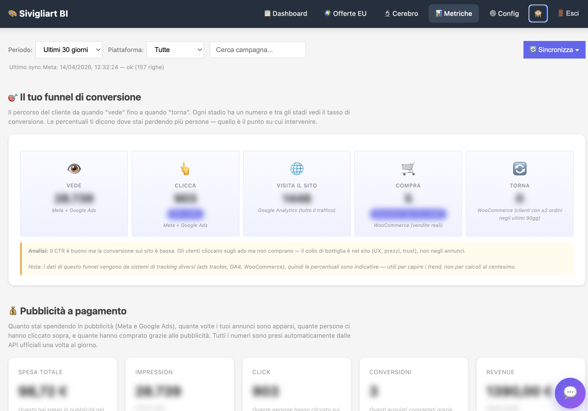
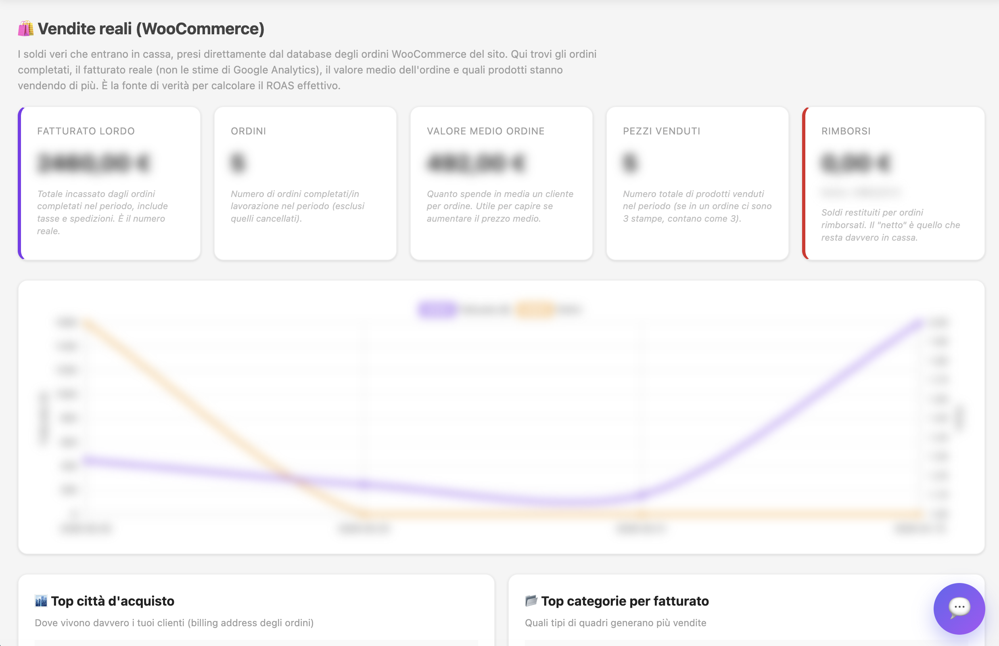
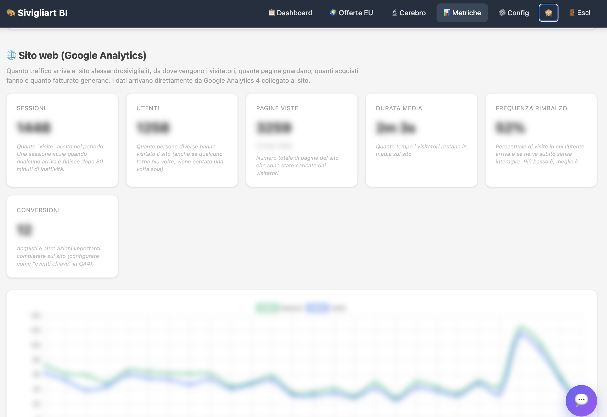
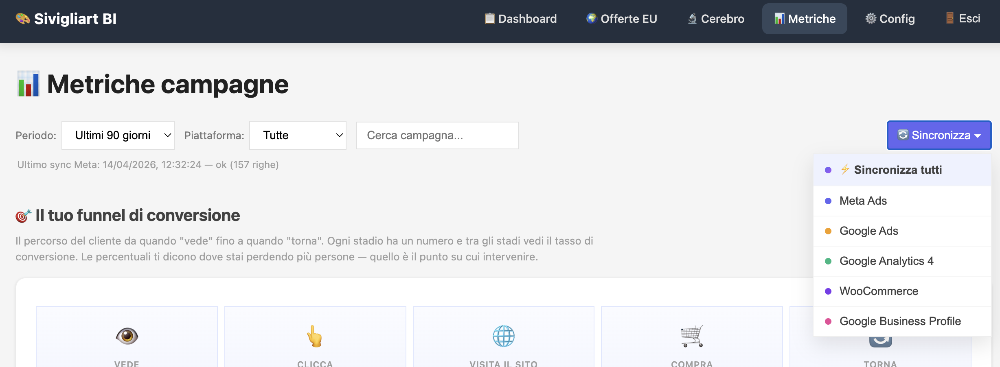

Sivigliart BI Dashboard — Basic Access Application
Sivigliart BI Dashboard is an internal, single-user reporting tool used by Matteo Luceri, an independent marketing consultant, to monitor advertising performance for a single client account: Sivigliart, an Italian seller of art prints and canvas wall art.
The tool aggregates read-only daily performance metrics (spend, impressions, clicks, conversions, conversion value) from each marketing platform the consultant manages for the client, into a single PostgreSQL database. Campaign performance is reviewed from a unified internal dashboard instead of logging into each platform's native UI.
The tool does not create, modify, pause, enable or delete any campaigns, ad groups, keywords, ads, budgets, bids or assets. It performs strictly read-only reporting.
The tool is deployed and actively serves real data for the following platforms. Google Ads is code-complete (see §5 and §6) and activates automatically upon Basic Access approval; data then populates the same dashboard sections shown below.
| Data source | Integration | Status | Proof |
|---|---|---|---|
| Meta Marketing API | v21.0 Insights, unified attribution | ● Live | Figure 1 — Funnel section populated with Meta data |
| Google Analytics 4 | Data API v1 (Service Account) | ● Live | Figure 3 — GA4 section populated |
| WooCommerce REST API | v3 (Consumer Key/Secret) | ● Live | Figure 2 — WooCommerce sales section populated |
| Google Business Profile | Performance API v1 (OAuth) | ● Live | Active sync in production (physical store metrics) |
| Google Ads API | REST + GAQL v18 | ◐ Code-complete, ready | §5 (code), §6 (GAQL query), Figure 4 (UI entry point) |
The following three figures show the dashboard as it runs in production today. Numerical values are visually obscured to protect the client's confidential business data; the structure, layout, and integration points are unchanged.

metrics_ads_daily table. Google
Ads rows contribute to these cards via platform='google'.



services/googleAdsService.js
→ fetchLastDays()) and UPSERTs results into
metrics_ads_daily. The Google Ads entry is wired in the UI
today; it executes against test accounts while awaiting Basic Access approval.
All components run inside a single Node.js application hosted on Render (https://render.com), a PaaS provider. The stack is:
googleads.googleapis.com/v18 using fetch
(no third-party SDK)oauth2.googleapis.com/tokenservices/googleAdsService.js
The service file is 171 lines. It exposes three functions consumed by the
ETL worker and a diagnostic utility. All calls are read-only GAQL queries via
googleAds:search.
const API_VERSION = 'v18';
const BASE = `https://googleads.googleapis.com/${API_VERSION}`;
const TOKEN_URL = 'https://oauth2.googleapis.com/token';
async function gaqlSearch(query) {
const devToken = process.env.GOOGLE_ADS_DEVELOPER_TOKEN;
const loginCid = process.env.GOOGLE_ADS_LOGIN_CUSTOMER_ID;
const customerId = process.env.GOOGLE_ADS_CUSTOMER_ID;
const accessToken = await getAccessToken(); // refresh-token flow
const url = `${BASE}/customers/${customerId}/googleAds:search`;
const headers = {
Authorization: `Bearer ${accessToken}`,
'developer-token': devToken,
'Content-Type': 'application/json',
};
if (loginCid) headers['login-customer-id'] = loginCid;
// Paginated POST with pageToken (read-only)
// ...
}The tool makes read-only calls to the Google Ads API. A single GAQL query runs once per day during the scheduled sync. The query body is shown below exactly as it appears in the codebase:
SELECT
segments.date,
campaign.id,
campaign.name,
metrics.cost_micros,
metrics.impressions,
metrics.clicks,
metrics.conversions,
metrics.conversions_value
FROM campaign
WHERE segments.date BETWEEN '{dateFrom}' AND '{dateTo}'
AND campaign.status != 'REMOVED'
ORDER BY segments.date DESC
The initial backfill window is 90 days. After that, the nightly sync refetches
the last 7 days (rolling window, so late conversion attributions are captured
correctly) and UPSERTs the results into PostgreSQL using
ON CONFLICT (date, platform, campaign_id) DO UPDATE.
POST /v18/customers/{customerId}/googleAds:search — main query endpoint.GET /v18/customers:listAccessibleCustomers — one-time only,
during initial setup, to verify the customer ID.Mutate* operation on campaigns, ad groups, ads, keywords,
budgets, bidding strategies or assets.
The table metrics_ads_daily is the canonical store for all ad
platforms. The platform column already discriminates rows so that
Google Ads data ingests alongside Meta data transparently. Extract from
database/db.js:
CREATE TABLE IF NOT EXISTS metrics_ads_daily (
id SERIAL PRIMARY KEY,
date DATE NOT NULL,
platform VARCHAR(20) NOT NULL, -- 'meta' | 'google'
account_id VARCHAR(100),
campaign_id VARCHAR(100) NOT NULL,
campaign_name VARCHAR(500),
spend DECIMAL(12,2) DEFAULT 0,
impressions BIGINT DEFAULT 0,
clicks BIGINT DEFAULT 0,
conversions DECIMAL(12,2) DEFAULT 0,
revenue DECIMAL(12,2) DEFAULT 0,
currency VARCHAR(3) DEFAULT 'EUR',
updated_at TIMESTAMP DEFAULT NOW(),
UNIQUE(date, platform, campaign_id)
);
CREATE INDEX idx_metrics_ads_platform_date
ON metrics_ads_daily (platform, date DESC);https://www.googleapis.com/auth/adwords read scope.GOOGLE_ADS_REFRESH_TOKEN) alongside
GOOGLE_ADS_CLIENT_ID, GOOGLE_ADS_CLIENT_SECRET,
GOOGLE_ADS_DEVELOPER_TOKEN, GOOGLE_ADS_LOGIN_CUSTOMER_ID,
GOOGLE_ADS_CUSTOMER_ID.gaqlSearch function surfaces
non-2xx responses with the full error body; the ETL worker logs the failure
to the metrics_sync_log table and exits non-zero. Render alerts
the consultant by email.DATABASE_URL..gitignore excludes .env.metrics_sync_log with status
(running / ok / error), start time,
end time, rows synced, error message if any.For any questions about this design document or the tool's intended use: